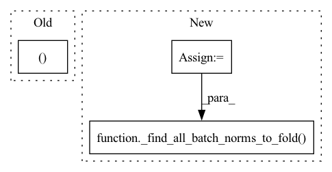

Pattern ID :2702
Before Change
if return_bn_conn_op:
bn_conv_linear_pairs.append((conv_linear_op, bn_info.input_bn, fold_backward))
else:
bn_conv_linear_pairs.append((conv_linear_op, bn_info.input_bn.get_tf_op_with_io_tensor(),
fold_backward ))
marked_bn_set.add(bn_info.input_bn)
return bn_conv_linear_pairsAfter Change
start_op_names = [start_op_names]
if isinstance(output_op_names, str):
output_op_names = [output_op_names]
conn_graph = ConnectedGraph(sess.graph, start_op_names, output_op_names)
bn_conv_linear_pairs, _ = _find_all_batch_norms_to_fold( conn_graph, start_op_names, output_op_names,
return_bn_conn_op)
return bn_conv_linear_pairs
def _get_bias_tensor(sess: tf.compat.v1.Session, conv: tf.Operation) -> libpymo.TensorParams():In pattern: SUPERPATTERN
Frequency: 3
Non-data size: 3
Instances Fragment ID: 10911206
Project Name: quic/aimet
Commit Name: a46cd2aec955ef8814978c5c7b306e85692730cb
Time: 2023-04-12
Author: quic_hitameht@quicinc.com
File Name: TrainingExtensions/tensorflow/src/python/aimet_tensorflow/batch_norm_fold.py
M Class Name: AnonimousClass
N Class Name: AnonimousClass
M Method Name: find_all_batch_norms_to_fold(4)
N Method Name: find_all_batch_norms_to_fold(4)
M Parent Class:
N Parent Class:
M File Name: TrainingExtensions/tensorflow/src/python/aimet_tensorflow/batch_norm_fold.py
N File Name: TrainingExtensions/tensorflow/src/python/aimet_tensorflow/batch_norm_fold.py
M Start Line: 163
M End Line: 196
N Start Line: 147
N End Line: 155
Before Change
bn_pairs = find_all_batch_norms_to_fold(model, (2, 10, 24, 24))
self.assertEqual(2, len(bn_pairs))
self.assertTrue((model.conv1, model.bn1 ) in bn_pairs)
self.assertTrue((model.bn2, model.conv3) in bn_pairs)
def test_bn_fold_auto_mode_transposed_conv2d(self):After Change
model.eval()
input_shape = (2, 10, 24, 24)
connected_graph = ConnectedGraph(model,
create_rand_tensors_given_shapes(input_shape))
conv_bn_pairs, bn_conv_pairs = _find_all_batch_norms_to_fold( model, input_shape, connected_graph)
assert len(conv_bn_pairs) == len(bn_conv_pairs) == 1
assert (model.conv1, model.bn1) in conv_bn_pairs
assert (model.bn2, model.conv3) in bn_conv_pairs
Fragment ID: 10911191
Project Name: quic/aimet
Commit Name: 5cceda6cd2e3487d2a03a04cbf5fd5dc285c78c2
Time: 2022-05-16
Author: quic_kyunggeu@quicinc.com
File Name: TrainingExtensions/torch/test/python/test_bn_fold.py
M Class Name: TestTrainingExtensionBnFold
N Class Name: TestTrainingExtensionBnFold
M Method Name: test_find_batch_norms_to_fold(1)
N Method Name: test_find_batch_norms_to_fold(1)
M Parent Class: unittest.TestCase
N Parent Class: unittest.TestCase
M File Name: TrainingExtensions/torch/test/python/test_bn_fold.py
N File Name: TrainingExtensions/torch/test/python/test_bn_fold.py
M Start Line: 529
M End Line: 535
N Start Line: 534
N End Line: 543
Before Change
// check for valid types
if not isinstance(input_op_names, (str, List )):
logger.error("start op names must be passed as a string or a List of strings")
// if passed start op name is only a string - create a list for connected graph
if isinstance(input_op_names, str):After Change
assert sim.session is not None
assert sim.connected_graph is not None
connected_graph = sim.connected_graph
bn_conv_linear_pairs, _ = _find_all_batch_norms_to_fold( connected_graph, starting_op_names, output_op_names)
_fold_given_auto_selected_batch_norms_scale(sim, bn_conv_linear_pairs)
def _fold_given_auto_selected_batch_norms_scale(sim: QuantizationSimModel, layer_pairs: List[PairType]): Fragment ID: 10911178
Project Name: quic/aimet
Commit Name: a46cd2aec955ef8814978c5c7b306e85692730cb
Time: 2023-04-12
Author: quic_hitameht@quicinc.com
File Name: TrainingExtensions/tensorflow/src/python/aimet_tensorflow/batch_norm_fold.py
M Class Name: AnonimousClass
N Class Name: AnonimousClass
M Method Name: fold_all_batch_norms_to_scale(3)
N Method Name: fold_all_batch_norms_to_scale(3)
M Parent Class:
N Parent Class:
M File Name: TrainingExtensions/tensorflow/src/python/aimet_tensorflow/batch_norm_fold.py
N File Name: TrainingExtensions/tensorflow/src/python/aimet_tensorflow/batch_norm_fold.py
M Start Line: 428
M End Line: 439
N Start Line: 379
N End Line: 383